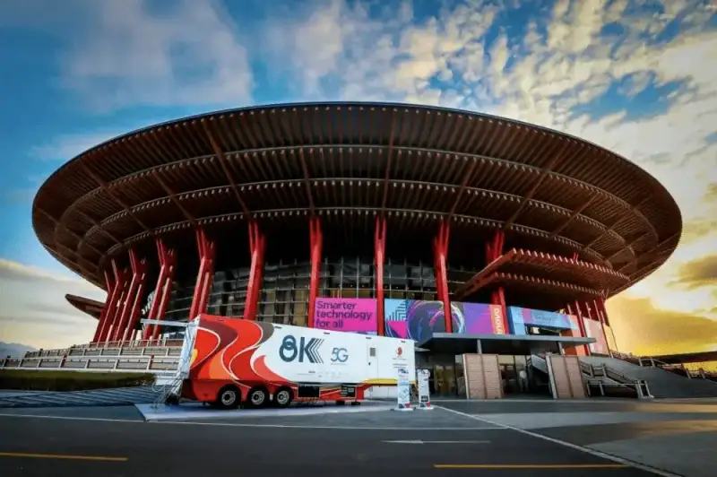
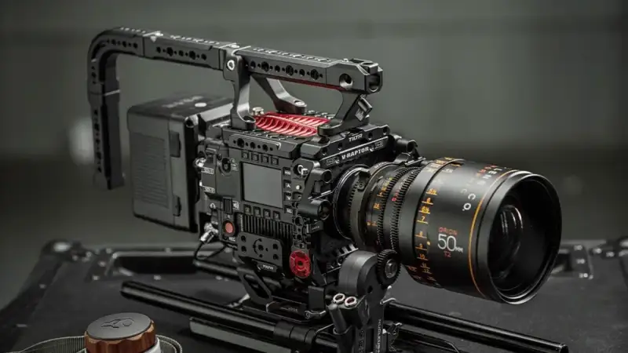
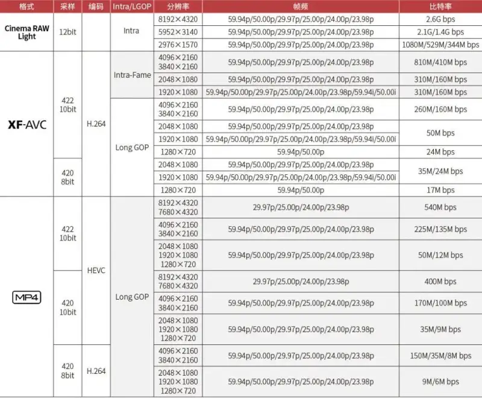
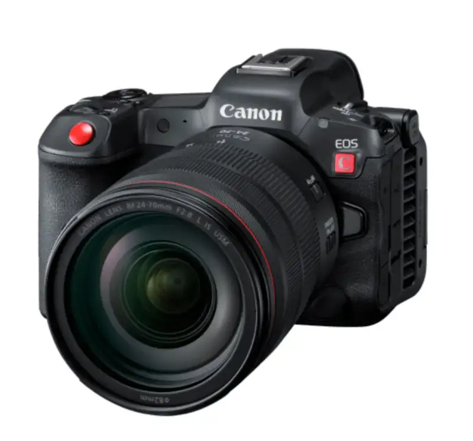
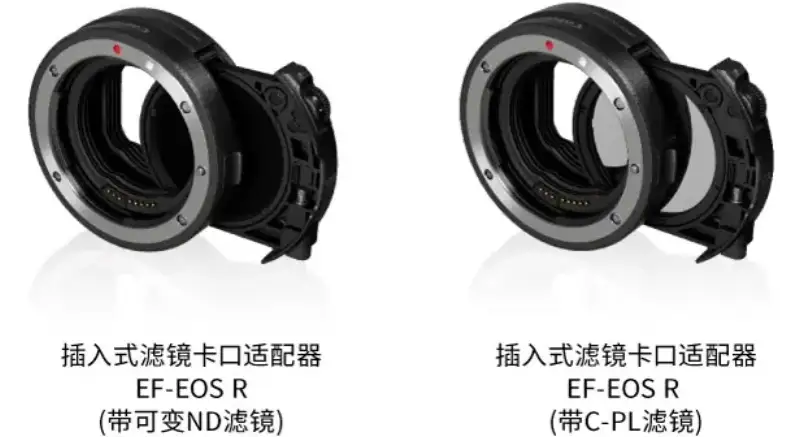
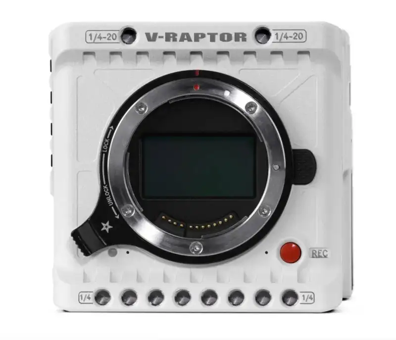
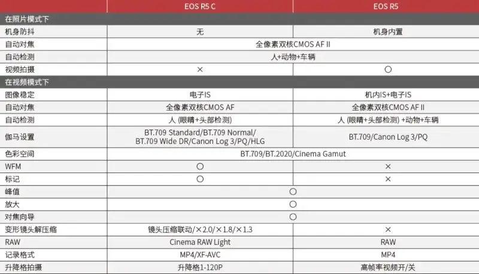
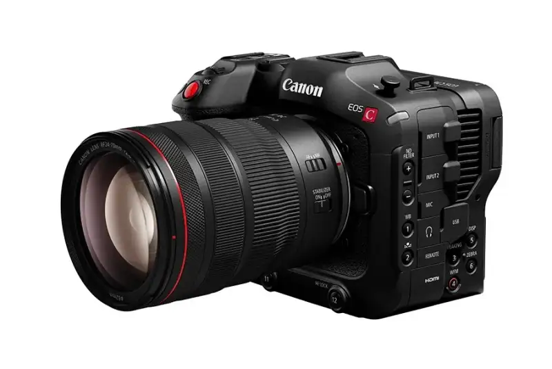
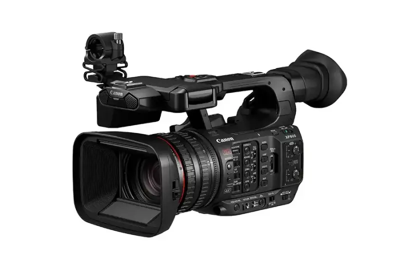
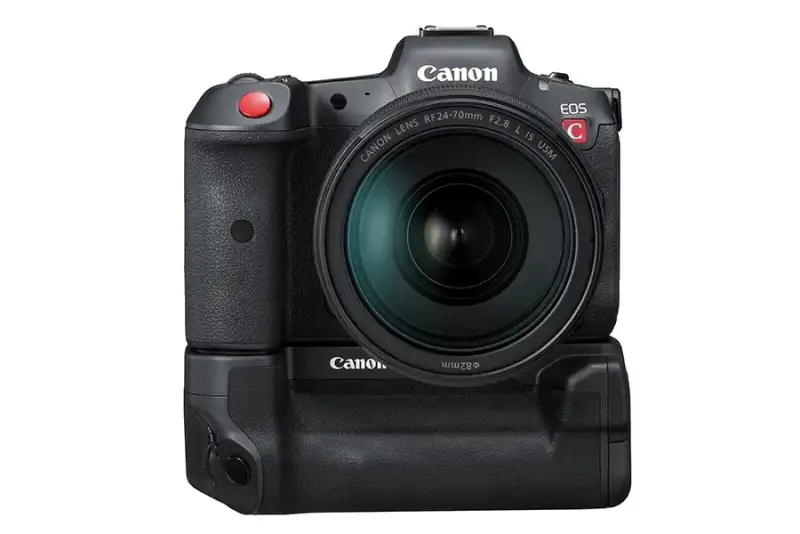

On February 20, the Beijing Winter Olympics closed. Beyond the Chinese team breakthrough to third place on the medal table, these Games also delivered the first full 8K live broadcast. Before the Games, many people thought that 4K was not yet widely adopted and still had an entry barrier, and that 8K was something for the far future. But the full broadcast made me feel clearly that 8K is accelerating toward us. CCTV and the National Radio and Television Administration each issued technical requirements for producing and broadcasting 8K Ultra HD TV programs, which pointed the way forward.

In the CCTV technical requirements for 8K Ultra HD TV production and broadcasting (trial) issued in January 2021, and the radio and online audiovisual industry standard published by the Administration in July 2021, we can see that footage must be at least 7680X4320 50P 10-bit 4:2:2 HDR to be used in a compliant 8K post-production workflow.
But today only a handful of cameras can shoot such high-spec 8K video. The better-value ones start at 200,000 yuan for the RED V-RAPTOR, 80,000 yuan for the Kinefinity MAVO Edge 8K, and 50,000 yuan for the BMD URSA MiniPro 12K. Whether in price or in size and weight, these cameras are far beyond ordinary video creators.

Canon broke this high entry barrier in February. The Canon EOS R5 C, released in February 2022, costs only 28,888 yuan and offers up to 8K 60P internal RAW recording, which meets the current 8K program production standards.

In my view, the EOS R5 C is more than an affordable 8K digital cinema camera. For a self-taught video worker, high integration and ease of use matter a great deal. The EOS R5 C is a digital cinema camera developed at the same time as the EOS R5. Its button layout is almost the same, so you can start using it fast with almost no learning time. More advanced cinema cameras put every main function on a physical button, but for a beginner they need more study time and cannot start shooting the moment the camera arrives. Also, because it shares many of the same molds, the EOS R5 C is among the lightest and smallest digital cinema cameras. In a shoulder bag or backpack, it is almost no different from an ordinary camera. After all, a camera you can take out the door is a good camera.

Focusing was once another big barrier in video. Professional crews usually need an experienced focus puller, because their digital cinema cameras cannot autofocus. The 8K cameras above, except for RED which works closely with Canon, have no continuous autofocus. The EOS R5 C, with Dual Pixel CMOS AF II, is different. It can detect faces and even eyes and track focus, which is ideal for a solo shooter, so the video creator can focus on the frame rather than the focus.
The Canon RF mount used by the EOS R5 C is a step beyond typical digital cinema cameras. The RF mount means you can use Canon native lenses with strong optics and, most of the time, IS optical stabilization, and also use Canon EF lenses through the original drop-in filter mount adapter. This gives the EOS R5 C an extremely wide freedom of lens choice.

On top of this, Canon and RED, the two leading brands in 8K video, reached a deep partnership years ago and share the RF mount. So we see the RF mount not only on Canon still and cinema cameras, but also on RED two newest products, the RED KOMODO and the RED V-RAPTOR. Perhaps in the near future the RF mount will continue the EF mount leading position and become the most popular lens mount in the world.

I believe many readers now wonder how the EOS R5 and the EOS R5 C actually differ. Should you upgrade from the EOS R5 to the EOS R5 C? On Canon website we found an official comparison table of the two cameras, and I share it here.

As one of the first buyers of the EOS R5, I see it as an all-around camera. It handles high-intensity photography and also offers basic high-spec video. I can shoot landscape 8K 30P RAW video on the EOS R5 and speed it up to 8K 50P in post by interpreting the footage, to meet the standard. After last year firmware update, my EOS R5 no longer overheats and shuts down. These capabilities already meet everyday creative needs, and I genuinely have a lot of photography to do. The five-axis stabilization makes my photo hit rate higher. So I think the EOS R5 suits light video shooters who still need to take photos.
In video creation, the EOS R5 C is truly more powerful. The CINEMA EOS UI is simpler and more efficient. Dual native ISO makes high sensitivity better, and the active cooling fan makes the EOS R5 C reliably stable. With support for anamorphic lenses and more recording formats, it meets the professional needs of video teams. So I think the EOS R5 C suits professional video creators, and users who occasionally take photos or shoot time-lapse.

Not everyone is interested in 8K. If you lower the bar to 4K, Canon current line also meets most people needs. For example, the EOS C70 uses the same S35 dual-gain sensor as the EOS C300 Mark III, at one third of its price, and its current market price is close to the EOS R5 C. Although it is only 4K, the DGO function gives the EOS C70 over 16 stops of dynamic range, and dynamic range directly affects the quality of the image.

For example, the XF605 camcorder, with a 1-inch sensor, has a 15x optical zoom lens and 4K 60P recording, which is very convenient for self-media programs or web live streaming. The EOS R5 and EOS R6 also have strong video functions, so they are fine for self-media video creation.

As a leading imaging brand, Canon has long worked to put more advanced imaging tools in more hands. The release of the EOS R5 C lowered the entry barrier to 8K video by another level. It is not only cheap but also easy to use. Looking back in history, the EOS R5 C may become a milestone product like the EOS 5D Mark II, remembered by every creator.